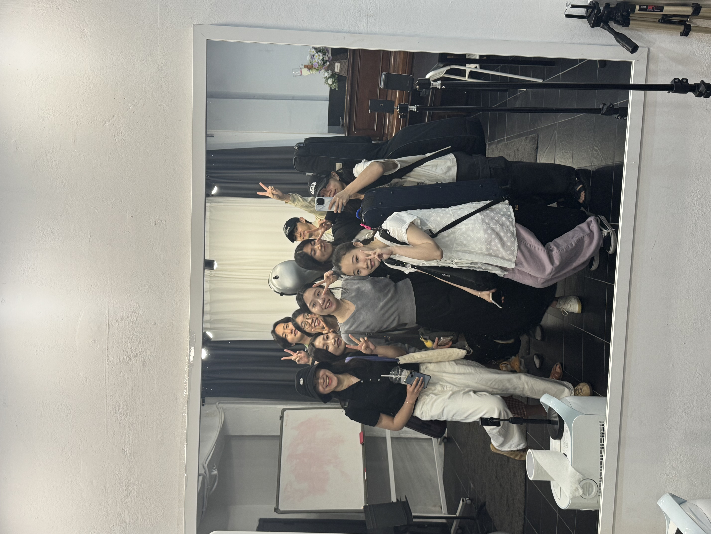
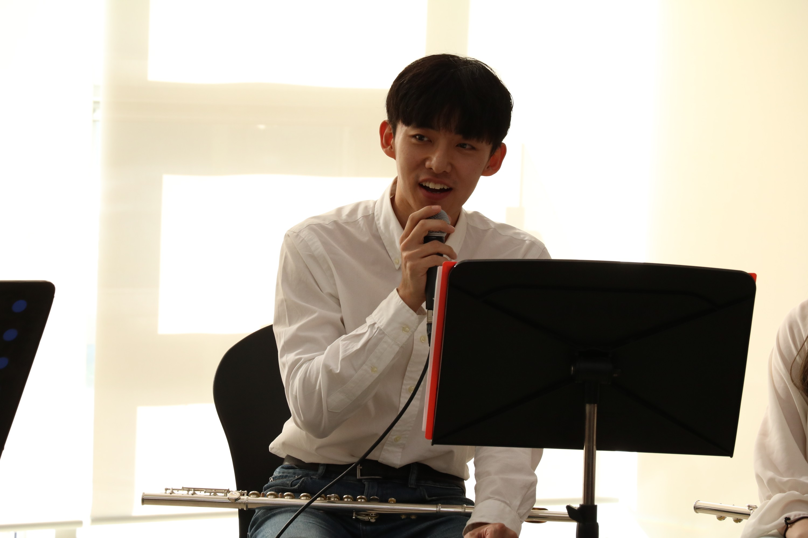
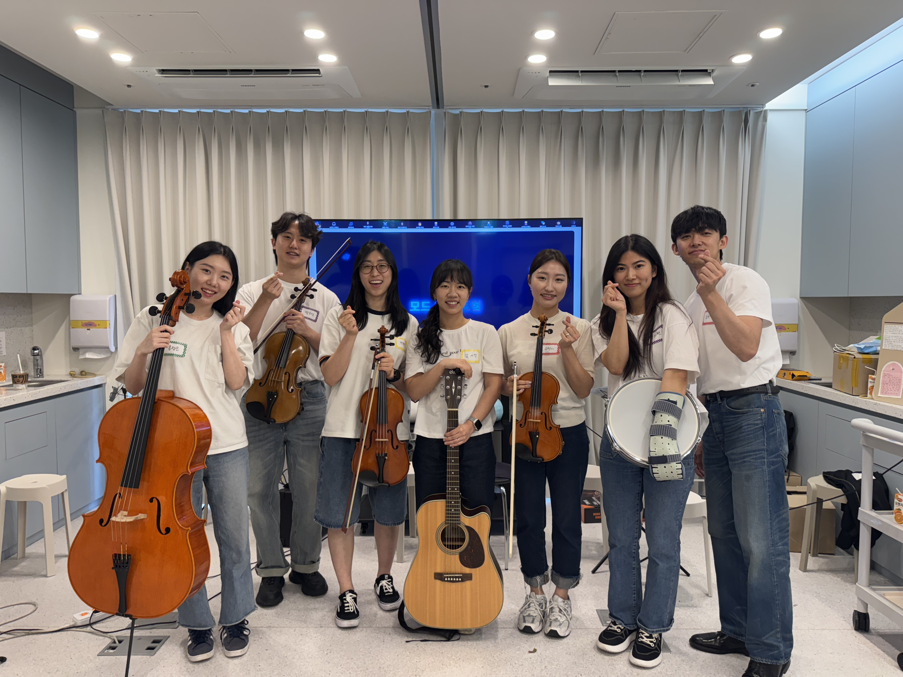
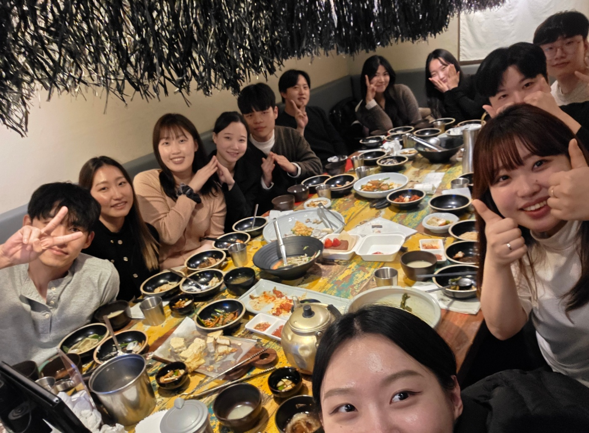
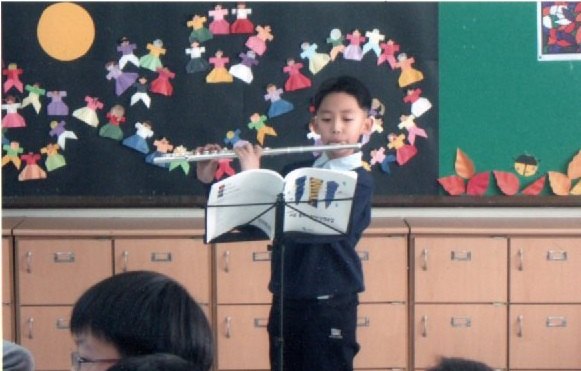

Leadership Journey
음악을 통한 사회 기여와 조직 운영 경험을 통해 성장한 리더십 여정을 소개합니다.
함께 보면 좋은 페이지: KPI 중심 프로젝트 · PM 운영 철학 · 인터뷰/협업 문의

모드앙상블 (MODE)
음악에서 사용되는 음계(Modes)에서 영감을 받아, 다양한 음악적 스펙트럼을 통해 관객과 함께 호흡하고자 하는 의미를 담고 있습니다. 각기 다른 환경과 경험 속에서 소중한 음표를 하나씩 쌓아가며, 함께 어우러지는 아름다운 하모니로 동반 성장을 이루어가는 앙상블입니다.
모드앙상블 창단 스토리

작은 시작에서 큰 변화까지
저는 작은 음악 모임인 mode 앙상블을 직접 창단하면서 한 걸음 한 걸음 시작했습니다. 몇 명의 친구들과 함께 모여 아무것도 없던 상태에서 차근차근 음악을 쌓아 올렸지요. 불과 몇 마디의 멜로디와 어색한 박자에서 시작된 우리 모임은, 서로에게 응원의 박수를 보내며 꿈틀거리는 유기체처럼 성장했습니다.
창단 배경
기존 MGOP 오케스트라에서 함께 병원 봉사를 해왔던 멤버들이 코로나 이후에도 꾸준히 봉사를 이어가고자 뜻을 모아 2024년 11월에 '모드(MODE)'를 창단했습니다. MGOP뿐 아니라 다양한 음악 단체에서 활동하는 주요 인원들이 합류하여 더욱 다채로운 음악을 선보이고자 노력하고 있습니다.
그리고 어느 날, 우리는 음악으로 사회에 기여하고 싶은 마음을 실천에 옮기기로 했습니다. 병원에서 관객을 만나면 어떨까 하는 생각이 떠올랐습니다. 저는 주저 없이 병원 담당자에게 전화를 걸어 작은 공연이라도 좋으니 환자들과 의료진에게 위로가 되는 시간을 마련하고 싶다고 말씀드렸습니다.
조직 구성
협력 네트워크
'비영리 법인 포레스트(Forrest) 오케스트라', '루메 앙상블' 등 협력 단체와 함께 왕성한 활동을 이어가고 있습니다. 여러 단체 및 행사에서도 꾸준히 공연해온 경험을 기반으로, 더욱 완성도 높은 병원 공연을 선보이고자 합니다.
리더십 발전 과정
2025년 공연 일정
활동 갤러리

넥슨재활어린이병원 공연
2025년 첫 공연으로 어린이들에게 희망의 선율을 전달했습니다.

MGOP 오케스트라 단장 시절
넥슨어린이재활병원에서의 지속적인 봉사 활동

도토리하우스 음악 교육
2025년 6월 2회 거쳐 환아 형제자매들을 대상으로 음악 교육 프로그램 진행

모드앙상블 창단 기념
20명의 멤버들과 함께한 첫 회식

개인 연주 활동
11살부터 시작한 플루트와 회사 입사 후 시작한 비올라

첫 플룻 공연 (11세)
20년 음악 여정의 시작, 떨리는 마음으로 무대에 선 첫 공연